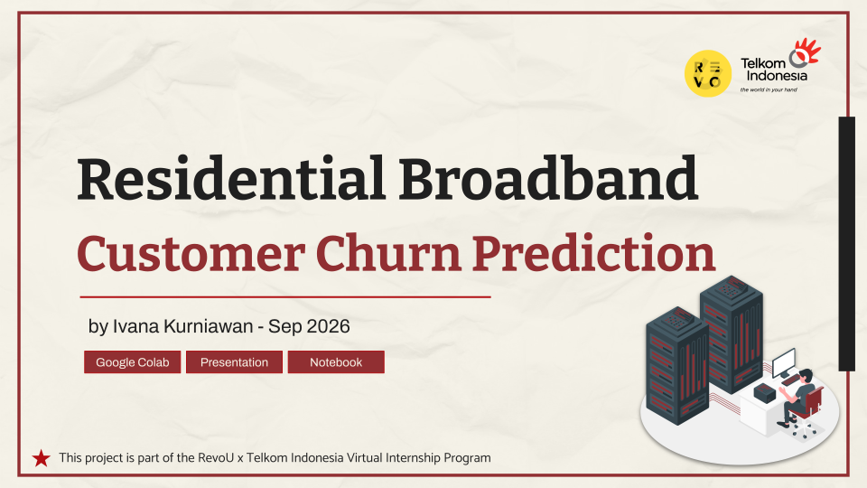
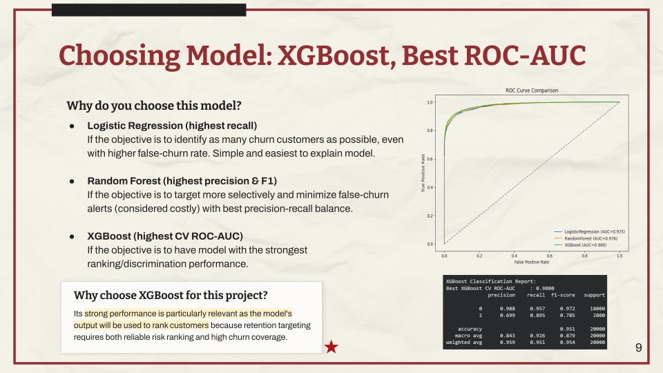
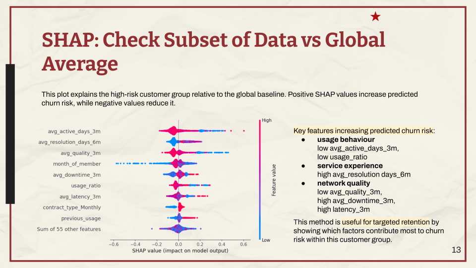
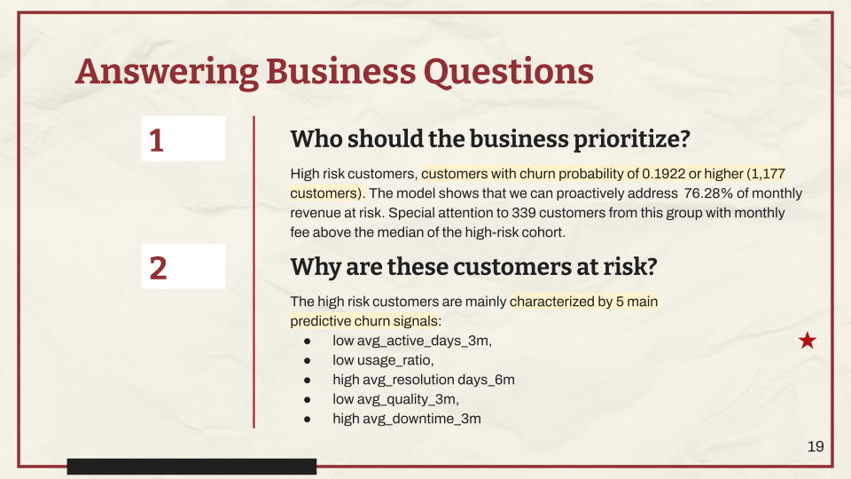

Residential Broadband Churn Prediction
Developed a customer churn prediction model using Python and machine learning, with SHAP analysis to explain churn risk and support targeted retention strategies.

Project Overview
Summary / Context
Telkom Indonesia's residential broadband case focused on moving from reactive churn management to early identification of at-risk customers using predictive analytics.
Goals
Predict customer churn, identify the main risk factors, and prioritize retention efforts based on customer risk and value.
Process
Prepared the data, explored churn patterns, trained and tuned classification models, applied teacher-student distillation, and used SHAP to explain predictions.
Output
Selected a distilled XGBoost model with 0.9565 cross-validation ROC-AUC. Identified 1,177 high-risk customers and prioritized 339 higher-value customers for targeted retention.
Key Responsibilities
- Prepared 20,000 labeled customer records and 4,000 unlabeled records for churn prediction.
- Compared and tuned Logistic Regression, Random Forest, and XGBoost models using stratified cross-validation.
- Applied teacher-student distillation to reduce reliance on seven selected late-stage churn signals.
- Used SHAP to explain churn predictions and identify key customer-level risk factors.
- Ranked high-risk customers by predicted churn probability and expected monthly revenue at risk.
Tools & Methods
Tools
Methods
Recommendations
- Prioritize high-value customers: Focus retention efforts on customers with high churn risk and greater potential revenue loss.
- Address service issues: Investigate poor network quality, downtime, and slow complaint resolution among high-risk customers.
- Integrate churn scoring: Run predictions regularly and assign priority customers to retention teams for follow-up.
- Test retention strategies: Use controlled experiments to measure retention improvement, intervention cost, and revenue protected.
- Monitor model performance: Track prediction quality, customer risk patterns, and model drift before updating the model.
Project Gallery




Disclaimer
The data provided is a synthetic representation created for educational purposes. It does not represent actual Telkom Indonesia customer data, operational performance, financial information, or business conditions. Any similarities to real-world situations are purely coincidental.